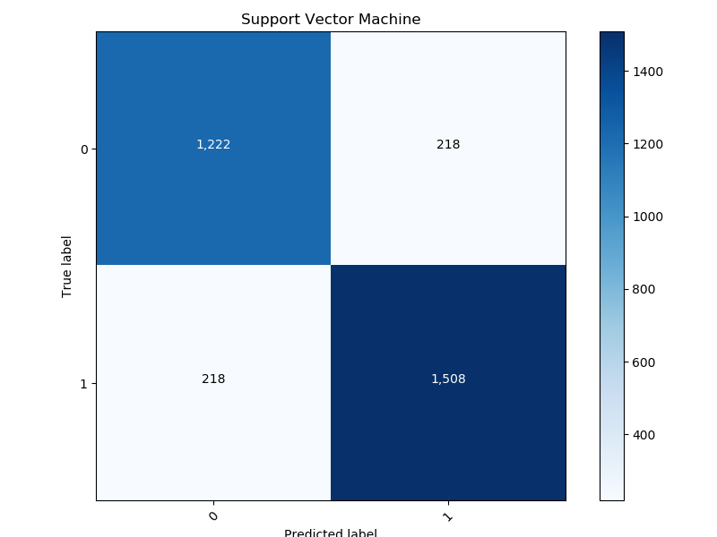
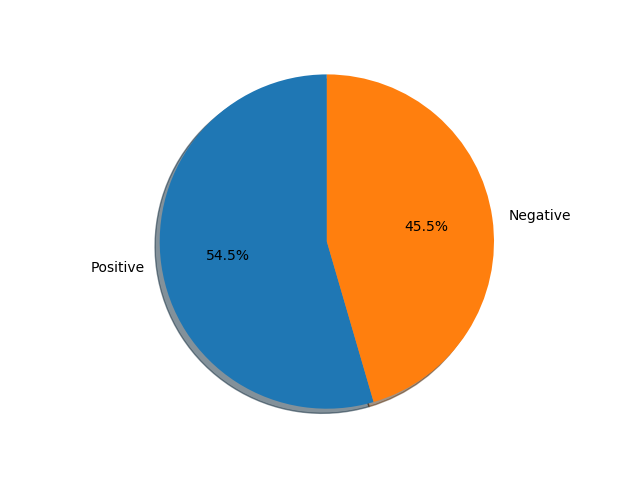

Accuracy Percentage: 86.22867972204673
Total number of reviews: 3166
Since there are more number of POSITIVE Reviews:
1508
, Hence the general sentiment is
Positive!
Following is the Confusion Matrix and Pie chart.

